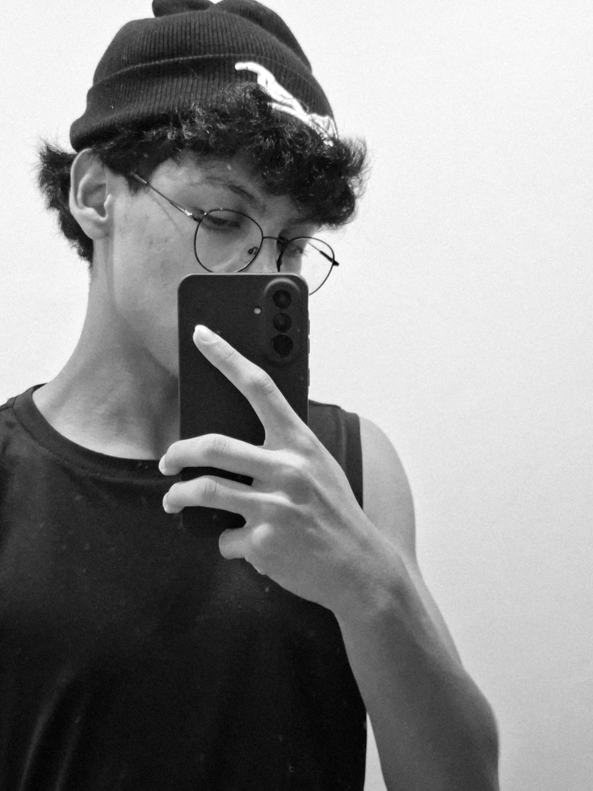

Sobre mim
Como já foi dito na página Home, sou um estudante de progamação, nao apenas front-end mas também quero aprender mais sobre back-end. Tenho 17 anos e estou cursando o terceiro ano do ensino médio integrado ao técnico de informática. Atualmente estou acompanhando bastante os cursos da Alura, principalmente o de HTML e CSS, dos quais estou utilizando dos conhecimentos fornecidos para construir esta página.
O objetivo desse site nao é apenas ser um portfólio para mim, mas também testar tudo que aprendi no curso da Alura.
